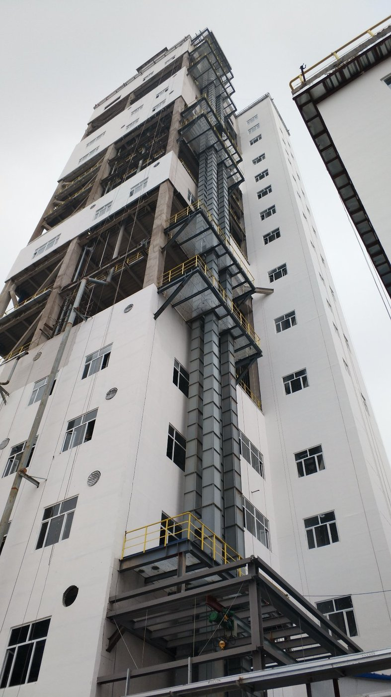

The TDG series gas-tight explosion-proof steel cord belt bucket elevator is built for vertical lifting of hot, abrasive, explosive, or toxic bulk solids in chemical, mining, and energy plants. By combining a fully sealed casing, anti-static steel cord belt, and explosion-proof drive assembly, it keeps both product and plant protected.
In this article
1. Why gas-tight and explosion-proof matter 2. Key design features of the TDG series 3. Gas-tight and dust-proof details 4. Explosion-proof protection 5. Typical applications 6. Field installation photo 7. Specification guidelines 8. Operational benefits1. Why Gas-Tight and Explosion-Proof Matter
Bucket elevators move material vertically through a tall casing. In every section — feed, discharge, and return leg — dust-laden air can escape or be drawn in. In plants handling coal, cement, fertilizer, or chemical powders, this creates three problems:
- Dust emissions: fugitive dust violates environmental limits, contaminates nearby equipment, and creates housekeeping hazards.
- Explosion risk: a dust cloud inside or around the elevator can ignite from a hot bearing, static discharge, or tramp metal.
- Product degradation: exposure to air or moisture can oxidize, hydrate, or contaminate sensitive materials.
A gas-tight elevator solves all three by keeping the material inside the casing and, when required, maintaining an inert or controlled atmosphere.
2. Key Design Features of the TDG Series
The TDG bucket elevator from Tianyi Machinery uses a steel cord rubber belt as the traction element. Compared with chain-type elevators, the steel cord belt offers:
- High tensile strength with low elongation, allowing lifts of 60 m or more without excessive take-up travel.
- Smooth running and low noise, reducing wear on buckets and casing.
- Good heat resistance when specified with heat-resistant or oil-resistant covers.
- Lightweight construction relative to lifting capacity, lowering drive power.
The TDG casing is a bolted, flanged, rectangular housing with welded stiffeners. Internal surfaces in high-wear zones can be lined with manganese steel or ceramic tiles. Buckets are pressed steel or polymer depending on temperature and abrasiveness.
3. Gas-Tight and Dust-Proof Details
To earn the "gas-tight" designation, every potential leak path is engineered closed:
3.1 Casing joints
Flanged casing sections are sealed with temperature-rated gaskets. Bolt spacing is kept tight so the flange remains flat under internal pressure or thermal cycling.
3.2 Head and boot sections
The head (drive) and boot (take-up) are the two largest openings. They use labyrinth seals plus felt or rubber wipers around shafts, with optional nitrogen purge connections for critical duties.
3.3 Inspection and cleaning doors
Doors are fitted with quick-release clamps and replaceable seals. They allow internal access for maintenance without degrading the casing seal.
3.4 Belt and bucket interface
Buckets are fixed with anti-static bolts and washers. Belt covers are conductive and grounded to prevent static charge accumulation.
4. Explosion-Proof Protection
The TDG series can be supplied with protection measures aligned to ATEX, NFPA 68/69, and Chinese GB standards:
- Explosion-proof motors: Ex d or Ex e rated motors with correct temperature class for the dust cloud.
- Explosion venting panels: relief panels on the head and boot sized to limit pressure rise during a deflagration.
- Spark detection: optional sensors on the casing detect hot particles and trigger suppression or diversion.
- Belt slip and misalignment switches: cut power before frictional heating becomes a hazard.
- Zero-speed monitoring: prevents restart while the elevator is still coasting or jammed.
5. Typical Applications
- Cement and lime: hot clinker and raw meal with high dust loads and elevated temperatures.
- Coal and petcoke: combustible dust requiring explosion-proof drives and venting.
- Fertilizers and chemicals: ammonium salts, urea, and other moisture- or contamination-sensitive granules.
- Metallurgical powders: zinc oxide, calcined alumina, and smelter by-products.
- New-energy materials: cathode and anode powders where oxygen exclusion is critical.
6. Field Installation Photo
The image below shows a tall TDG series bucket elevator installed on the outside of a multi-story chemical plant building. The unit lifts material between process floors through a fully sealed casing with platform access for inspection and maintenance.

Project SiteThis installation demonstrates the elevator's compact footprint relative to lift height, its integration with building platforms, and the sealed casing running the full vertical path.
7. Specification Guidelines
| Parameter | Typical range / option | Why it matters |
|---|---|---|
| Belt type | Steel cord rubber belt, anti-static | High strength, low stretch, safe for combustible dust |
| Lift height | Up to 80 m | Covers most multi-floor process plants |
| Capacity | 20–800 t/h | Matches kiln, mill, or reactor feed rates |
| Bucket material | Carbon steel, SS304, SS316L, polymer | Resists heat, corrosion, and abrasion |
| Casing seal | Gasketed flanges + shaft seals + purge ports | Gas-tight operation and dust containment |
| Motor rating | Ex d / Ex e available | Explosion-proof compliance |
| Safety devices | Belt slip, misalignment, zero-speed, relief vents | Layered protection against fire and explosion |
8. Operational Benefits
- Safety: explosion-proof drives, venting, and monitoring reduce fire and dust-explosion risk.
- Environmental compliance: gas-tight casing minimizes dust emissions and protects workers.
- Product integrity: controlled atmosphere prevents oxidation, hydration, or contamination.
- High uptime: steel cord belt and accessible wear parts reduce maintenance stops.
- Flexible layout: vertical or inclined installation fits inside or outside existing buildings.
- Long service life: abrasion-resistant liners and high-quality belts extend replacement intervals.
Frequently Asked Questions
What makes the TDG bucket elevator explosion-proof?
A dust-tight, static-dissipating casing with explosion venting where required, plus speed, belt-alignment, and temperature monitoring with automatic trip.
What is the maximum lift height of a TDG steel-cord elevator?
The steel-cord belt version reaches up to about 80 m depending on material and configuration; plate-chain (NE) and ring-chain (TH) designs serve other heights.
How is the TDG elevator made gas-tight?
Casing joints use sealed flanges, the head and boot are tightly fitted, and inspection and cleaning doors have gaskets so the interior stays isolated.
Where is the TDG gas-tight elevator used?
In chemical, smelting, and new-energy plants where materials are flammable, explosive, or must be kept from air and moisture.
What belt does the TDG elevator use?
A steel-cord belt with anti-static properties for high lift and explosion-prone duty, paired with deep buckets for stable discharge.
Need a TDG Gas-Tight Explosion-Proof Bucket Elevator?
Send us your material properties, lift height, capacity, and plant layout. Our engineering team will size a TDG series steel cord belt bucket elevator with the right sealing, venting, and explosion-proof configuration for your process.
Request a Design Proposal